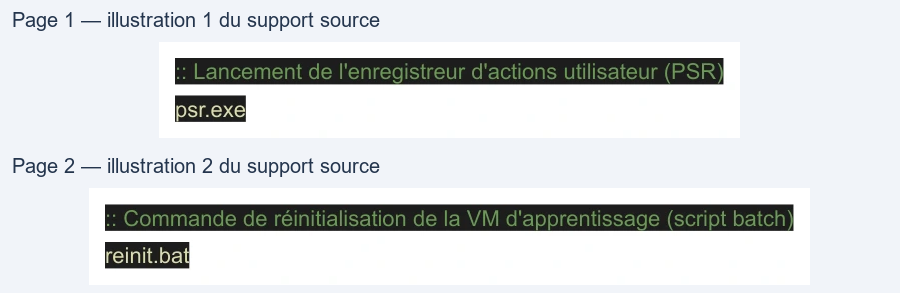

Transcription du document du Drive TSSR. La mise en forme est adaptée au Web ; les compléments IA du portail sont présentés séparément.
Dans le cadre d'un déploiement ou d'un TP de formation, la virtualisation avec VMware
Workstation permet de simuler un environnement client étanche et reproductible.
Configuration recommandée de la VM Windows 10
● Type de système : Windows 10 x64
● Mémoire RAM : 4 Go
● Processeur : 1 processeur / 1 cœur
● Disque dur virtuel : 32 Go (fichier unique)
● Carte réseau : Host-Only (Réseau privé virtuel)
L'installation s'effectue depuis une image ISO officielle bootable :
1. Démarrage sur l'image ISO de Windows 10.
2. Choix de la langue (Français) et sélection de l'édition Windows 10 Professionnel.
3. Sélection du type d'installation : Personnalisée : installer uniquement Windows (avancé)
sur l'espace non alloué.
4. Configuration initiale hors-ligne (Installation limitée sans compte Microsoft cloud).
5. Création d'un compte utilisateur local administrateur (ex: pnom).
6. Désactivation des services de télémétrie, géolocalisation et données de diagnostic
superflues.
7. Installation des VMware Tools pour optimiser l'affichage et la gestion du périphérique.
8. Création d'un snapshot d'état propre (ex: TP1 terminé).
L'enregistreur d'actions utilisateur de Windows (Step Recorder / psr.exe) permet d'automatiser
la capture des étapes pour rédiger une procédure personnalisée d'installation.
:: Lancement de l'enregistreur d'actions utilisateur (PSR)
psr.exe
:: Commande de réinitialisation de la VM d'apprentissage (script batch)
reinit.bat
